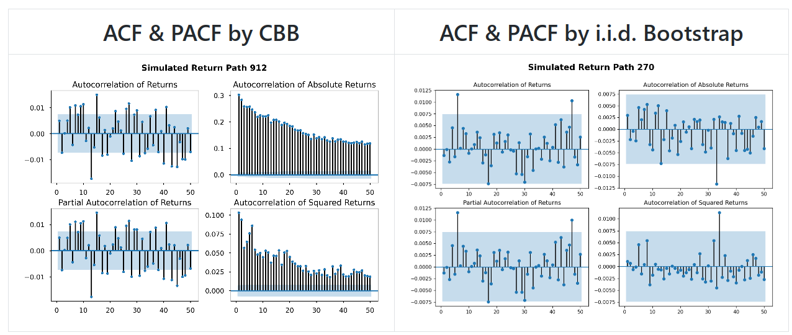
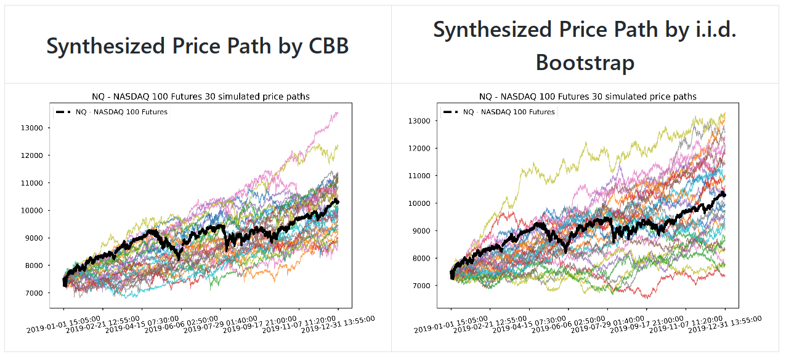

Ning Liu
Data Mining
All my hobby projects live on GitHub repositories. Here are some highlights:
-
Bootstrap Price Time Series
.This project explores a few time series bootstrapping methods to synthesize financial market price/return paths, which are useful for quantitative strategy development with robustness simulation and back testing.
For details please visit: https://github.com/0liu/bootstrap-price-time-series
Jupyter Notebook: Bootstrapping Price Time Series.ipynb
 